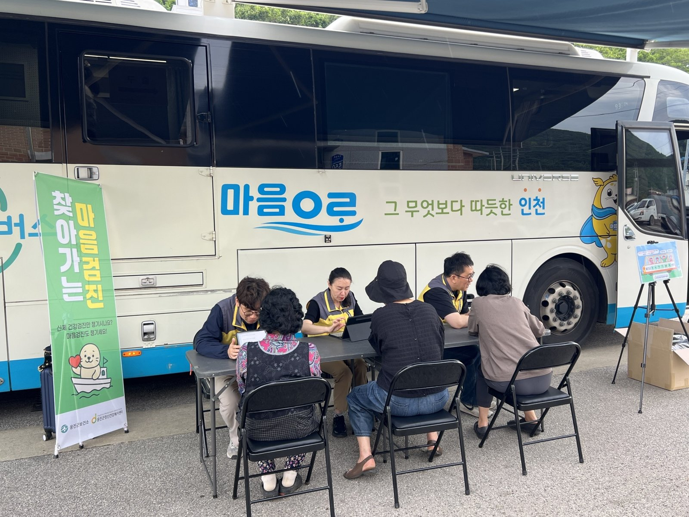

강화·옹진, 농어촌 기본소득 시범사업에 나란히 신청
34개 군 신청, 18개 군 안팎 선정
국비 50%로, 뽑히면 인천시도 4분의 1
AI경제저널=김갑봉 기자 | 인천 강화군과 옹진군이 2027년 농어촌 기본소득 시범사업 신규 공모에 함께 신청했다. 농림축산식품부가 4일 밝힌 신청 현황표에서 인천은 공모 대상 2개 군이 모두 신청했다.
공모는 10월 8일부터 11월 3일까지 열렸다. 대상은 인구감소지역으로 지정된 69개 군 가운데 아직 시범사업에 참여하지 않은 52개 군이다. 이 가운데 34개 군(65.4%)이 신청했다.

18개 군 안팎을 뽑는다
농식품부는 18개 군 안팎을 뽑는다. 경쟁률은 1.9 대 1이다. 시·도별 신청은 전남광주 12곳, 강원 7곳, 충남 4곳, 충북·전북 각 3곳이다. 인천은 2곳, 경기·경북·경남은 각 1곳이다.
신청한 34개 군 가운데 24개 군은 세 차례 공모에 모두 응모했다. 농식품부는 서류·발표평가를 거쳐 11월 19일께 선정 지역을 잠정 발표한다. 최종 선정은 국회 예산 확정 뒤에 한다.
국비 비율 40%에서 50%로
농식품부는 2027년 예산안에서 국비 지원 비율을 40%에서 50%로 올렸다. 나머지는 시·도가 25%, 군이 25%를 낸다. 시·도와 군의 몫이 각각 5%포인트씩 줄었다.
농식품부는 지방정부의 재정 여력도 보강하겠다고 밝혔다. 미래대응기금으로 새로 편성하는 3조5000억 원 규모의 지방미래성장지원금을 재원으로 쓸 수 있게 한다는 설명이다(정책브리핑 5일).
강화·옹진 기본소득이 인천 재정에 말하는 것
국비 비율이 올라도 재원 구조는 군만의 일이 아니다. 강화·옹진이 뽑히면 인천시가 4분의 1을 낸다. 인천시는 5일 2027년 예산안 15조9000억 원을 시의회에 냈다.
선정 결과는 시 예산안이 시의회에 넘어간 뒤 나온다. 시범사업이 끝난 뒤 이 지출을 이어 갈지도 미리 따질 몫이다.
인천시는 올해 농어업인 수당으로 농어가당 연 60만 원, 모두 84억4700만 원을 지급했다. 2029년 이후 연 80만 원까지 올릴 계획이다.
농어촌의 소득 바탕은 약해지고 있다. 국가데이터처의 8월 비임금근로 부가조사에서 국내 농림어업 비임금근로자는 1년 새 9만4000명 줄었다. 농림어업에서 자기 일을 하는 사람과 그 가족이 그만큼 줄었다.
기본소득이 더해지면 강화·옹진 주민의 가처분소득은 두 갈래로 늘어난다. 효과는 그 소득이 동네 가게 매출로 얼마나 이어지는지에 달렸다. 두 군은 인천에서 인구감소지역으로 지정된 곳이다.
강동윤 농식품부 농촌소득에너지정책관은 선정 기준을 밝혔다. 그는 "각 지역의 여건과 추진 의지, 주민 참여 방안 등을 종합적이고 공정하게 검토하여 대상 지역을 선정하겠다"고 말했다.
참고문헌
- 농림축산식품부 농촌소득정책과(2026). '27년 농어촌 기본소득 시범사업 신규 공모에 34개 군 신청(보도자료). 2026년 11월 4일. https://www.korea.kr/briefing/pressReleaseView.do?newsId=156787966
- 정책브리핑·KTV(2026). [정책 바로보기] 기본소득 확대로 지방재정 부담 가중?. 2026년 11월 5일. https://www.korea.kr/news/policyNewsView.do?newsId=148975122
- 인천광역시 예산담당관(2026). 인천시, 2027년 예산안 15조 9천억 원 편성, 민생 지키고 인천 제값 찾는다(보도자료). 2026년 11월 5일. https://www.incheon.go.kr/IC010205/view?repSeq=DOM_0000000015900573
- 인천광역시 농축산과(2026). 인천시, 농어업인 수당 단계적 확대… 2029년 연 80만 원 목표(보도자료). 2026년 9월 29일. https://www.incheon.go.kr/IC010205/view?repSeq=DOM_0000000015651920
- 국가데이터처 고용통계과(2026). 2026년 8월 경제활동인구조사 비임금근로 부가조사 결과(보도자료). 2026년 11월 4일. https://www.korea.kr/briefing/pressReleaseView.do?newsId=156787907
[사진 출처]
- [사진1] 인천광역시 보도자료 「인천시‘마음안심버스’백령도 주민 마음건강 살핀다」 붙임 사진 「마음안심버스 1」, 공공누리 출처표시, 2026.6.9., https://www.incheon.go.kr/IC010205/view?repSeq=DOM_0000000014880411
관련기사
- [인구 브리핑] 인구감소지역 주민 1년 새 1만6000명 감소, 외국인은 2만7000명 증가
- 인천시 "국비 1306억 더"…노동감독관 인건비·인천e음·M버스
- 강화남단 경제자유구역, 지정 요청 11개월째…2차 발전계획에 담는다
- 인천시, 여객선 운임지원 2027년 손질…7월 끊긴 타 시·도민 지원은 50% 검토
저작권자 © AI경제저널 무단전재 및 재배포, AI학습 및 활용 금지